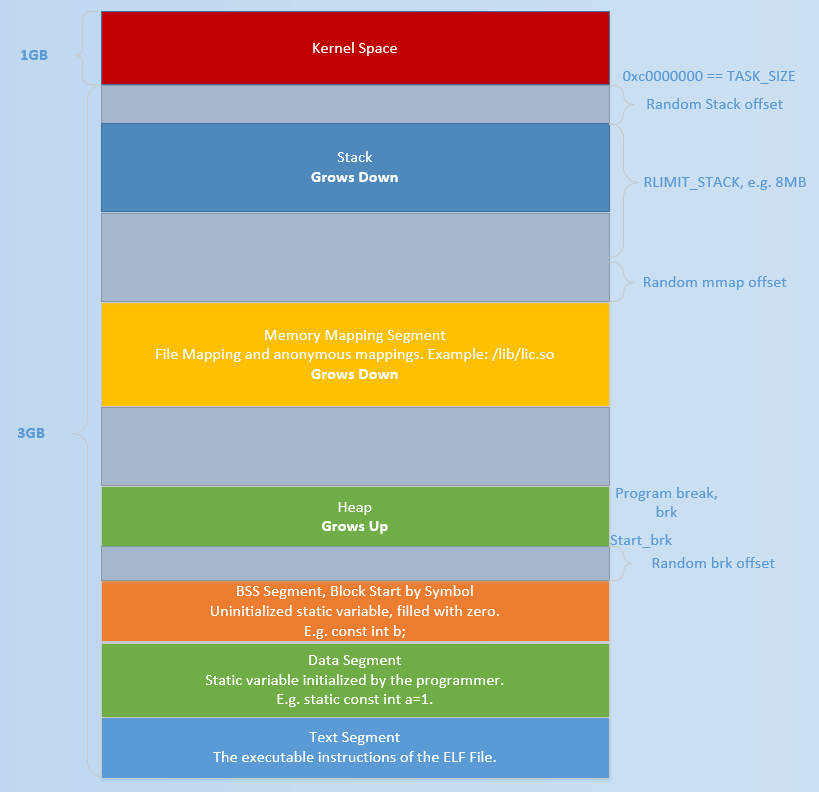
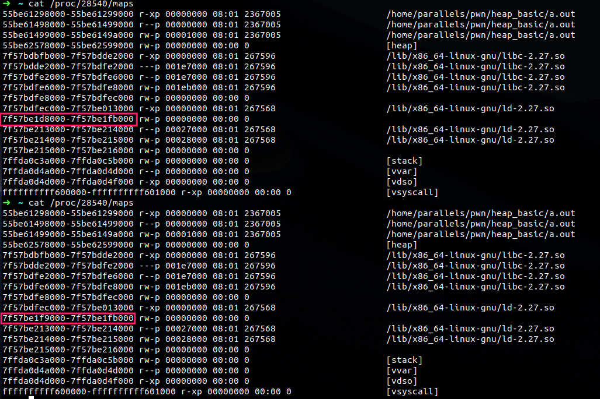

讲一些学到的linux堆基础
堆
堆是可以提供动态分配的内存，在程序虚拟地址中是一块连续的线性空间，从低地址向高地址增长，管理堆的程序被称为堆管理器；
在linux pwn里面一般关注的是ptmalloc2，是glibc2.3以后集成的堆管理器。
需要注意的是，在linux中有这样一个基本的内存管理思想：
只有当真正访问一个地址的时候，系统才会建立虚拟页面与物理页面的映射关系
堆的基本函数
malloc
1 | malloc(size_t n); |
关于malloc需要注意的是：
- malloc返回的是对应内存块的指针
- 当n为0时，返回当前系统允许的堆最小内存块
- 当n为负数时，由于大多数系统中
size_t是一个无符号数，所以会分配很大一块空间，但是一般情况下都会失败；
free
1 | free(void *p); |
和malloc可以说是一个对应关系，free用于释放内存块
- p为空指针时不进行任何操作；
- p已经被释放后，再次释放会导致乱七八糟的效果(double free)
- 如果释放的空间很大，一般会直接还给系统以减小程序占用的空间，除非禁用
mallopt
背后的系统调用
malloc函数和free函数是程序猿编程时调用的程序，但是实际上背后运行的并不是这些东西，而是通过更简单的函数系统调用实现的
brk
brk函数实际上执行的操作很简单，就是移动堆的指针，有些类似于移动esp的函数；
通过移动栈上的esp就可以让栈增大或缩小，同理移动brk用于控制堆的大小。

brk函数和start_brk最初指向的地址是一致的，都位于bss段向上一个随机偏移（如果不开启ASLR则是直接在bss段的结尾）
brk通过移动heap的顶端来实现heap的扩容和回收
mmap
mmap就是memory map，从名字看也是和内存管理相关的；
mmap的好处在于可以分配私有匿名的内存空间
mmap的可以用来在虚拟内存地址空间中分配地址空间，创建和物理内存的映射关系；
映射关系可以分文件映射和匿名映射两种，文件映射是文件映射进虚拟内存，匿名映射则是一片全0的空间；又可以根据共享方式分为私有映射和共享映射，其中私有映射是这个进程独有的，其他进程无法读写修改，也不会反应到物理内存中；因此总结一下一共存在四种映射。
这里用一个例子来看一下mmap和对应的munmap函数对进程虚拟内存的影响；在linux中可以查看/proc/pid/maps来看内存的布局
1 | int main() |
运行的程序就是这样简单的调用mmap和munmap，可以趁程序在getchar等待输入的时候查看内存布局

这里面框出来的两个就是munmap执行前后的差别；
在ctfwiki里面写到运行的结果
1 | sploitfun@sploitfun-VirtualBox:~/ptmalloc.ppt/syscalls$ cat /proc/6067/maps |
这应该是运行在32位系统下的效果，mmap分配的匿名空间在b7开头的地址空间；
而图中测试在64位下，mmap分配的区域在7f开头的内存空间，和加载的so文件比较接近